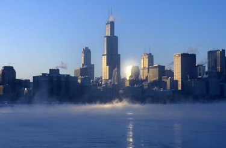

A világ 10 legmagasabb épülete
- A Burj Khalifa – Dubaj tornya
- Makkah Royal Clock Tower Hotel – Szaúd-Arábia legmagasabbja
- One World Trade Center – New York új büszkesége
- Taipei 101 – Tajvan szeme
- Shanghai World Financial Center – Kína neves felhõkarcolója
- International Commerce Centre – Hongkong kereskedelmi palotája
- Petronas Tower 1–2. – Kuala Lumpur ikrei
- Zifeng Tower – Kína csillagvizsgálója
- Willis Tower – Chicago megmászható magassága
A Burj Khalifa – Dubaj tornya

Makkah Royal Clock Tower Hotel – Szaúd-Arábia legmagasabbja

One World Trade Center – New York új büszkesége

Taipei 101 – Tajvan szeme

Shanghai World Financial Center – Kína neves felhõkarcolója

International Commerce Centre – Hongkong kereskedelmi palotája

Petronas Tower 1–2. – Kuala Lumpur ikrei

Zifeng Tower – Kína csillagvizsgálója

Willis Tower – Chicago megmászható magassága

A Willis Tower 25 éven át õrizte a világ legmagasabb épülete címet, és az Egyesült Államokban ilyen téren ma is elõkelõ helyen áll. Chicago leglátogatottabb turisztikai központja, ahol több mint egymillió ember fordul meg évente. Az épülettel kapcsolatban világhírû eset, hogy egyszer (tapadókorongok segítségével) sikeresen megmászta egy magát pókembernek képzelõ férfi.